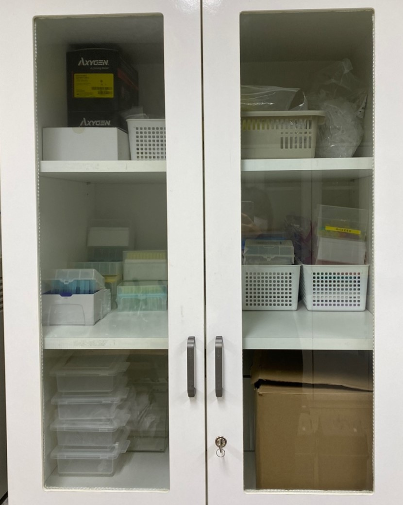
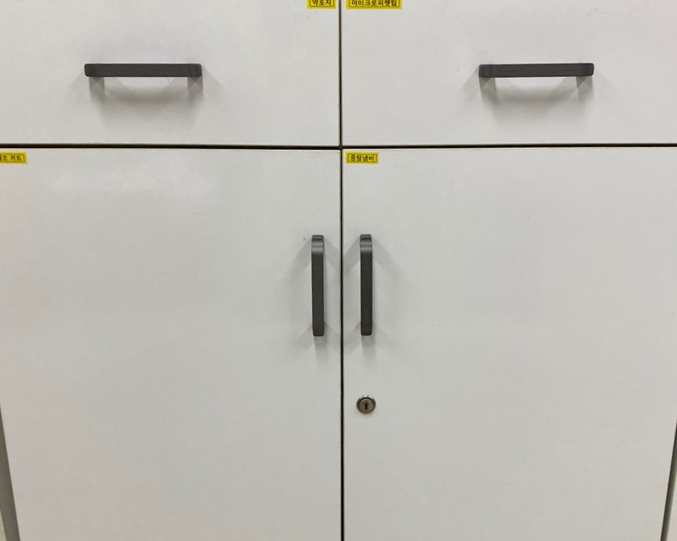

8번 서랍
|  | ①다용도 홈판: 홈판은 화학실험에서 시약이나 세포 배양 등 다양한 개체 실험에서 분리 보관, 사용하는 기구 ②가지달린 u자실험:시험관에는 긴 유리관의 한쪽이 둥근 바닥으로 막혀 있는 u자 모양의 일반적인 모양의 시험관 이외에 눈금이 그려져 있는 형태 ③냉각기 :물체를 냉각하는 기기 ④전자저울 |
|  | ①탈지면 : 표백. 가볍고 탄력성과 통기성이 좋으며 공기 중의 잡균을 차단하므로 의료분야에서 위생재료로 많이 사용하고 있음 ②약포지 : 약을 싸는 포장지 ③마이크로 피펫팅ㅤㅤㅤㅤㅤㅤㅤㅤㅤㅤㅤㅤㅤㅤㅤㅤㅤㅤㅤㅤㅤㅤㅤㅤㅤㅤㅤㅤㅤㅤㅤㅤㅤㅤㅤㅤㅤㅤㅤㅤㅤㅤㅤㅤㅤㅤㅤㅤㅤㅤㅤㅤㅤㅤㅤㅤㅤㅤㅤㅤㅤㅤㅤㅤㅤㅤㅤㅤㅤㅤㅤㅤㅤㅤㅤㅤㅤㅤㅤ |
①아스피린 제조 키트 ②중탕냄비ㅤㅤㅤㅤㅤㅤㅤㅤㅤㅤㅤㅤㅤㅤㅤㅤㅤㅤㅤㅤㅤㅤㅤㅤㅤㅤㅤㅤㅤㅤㅤㅤㅤㅤㅤㅤㅤㅤㅤㅤㅤㅤㅤㅤㅤ |